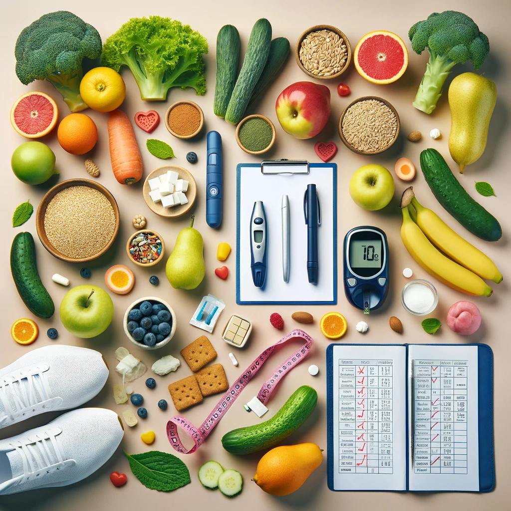

Programme Nutritionnel pour Diabétiques

Conseils Nutritionnels
- Privilégiez les aliments à faible indice glycémique pour stabiliser la glycémie.
- Incorporez une variété de légumes non féculents à chaque repas.
- Choisissez des sources de glucides complexes, comme les grains entiers.
- Intégrez des sources de protéines maigres et de graisses saines à votre alimentation.
- Limiter la consommation de sucre ajouté et de boissons sucrées.
Exemple de Menu Journalier
Petit Déjeuner
- Omelette aux épinards et champignons avec une tranche de pain complet.
Déjeuner
- Salade de poulet grillé avec avocat, tomates, concombre et vinaigrette à l'huile d'olive.
Dîner
- Filet de saumon avec quinoa et brocolis vapeur.